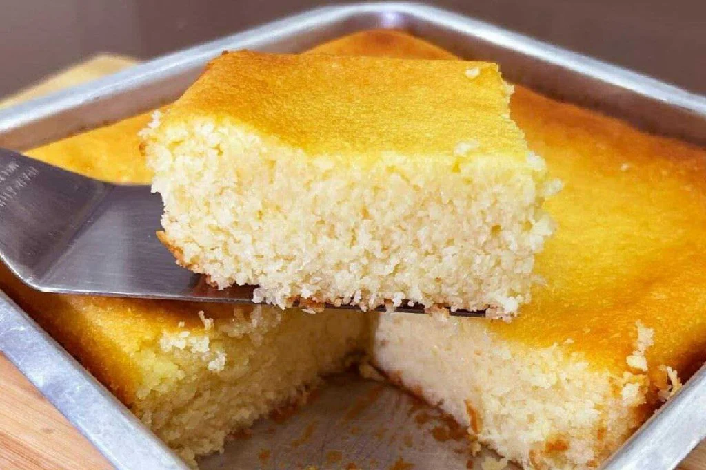

Ingredientes
- 200 gramas de coco ralado
- 1 vidro de leite de coco
- 1 caixinha de leite condensado
- 3 ovos
Modo de preparo
- Adicione no liquidificador o leite condensado, os ovos e o leite de coco.
- Bata vigorosamente por 2 minutos até obter uma mistura homogênea
- Adicione o coco ralado e bata por mais 1 minuto.
- Despeje a mistura do liquidificador em uma forma quadrada (18 cm x 18 cm) previamente untada com manteiga e leve para assar.